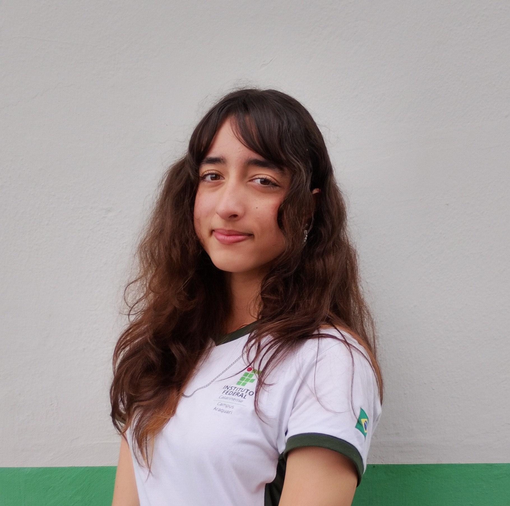
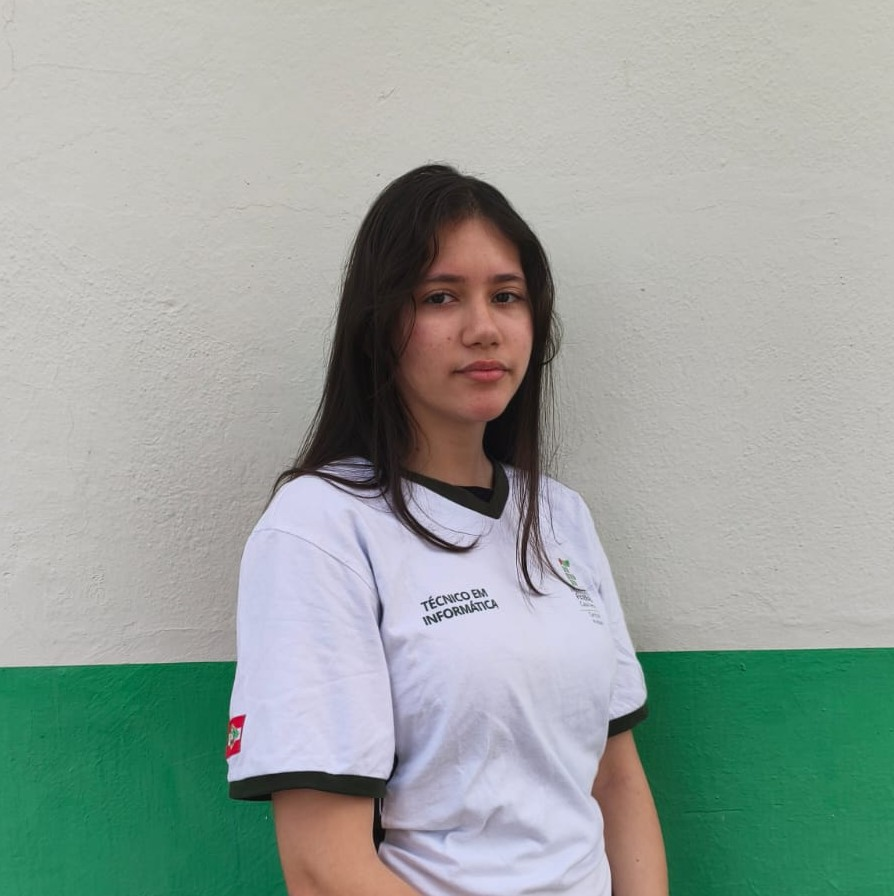
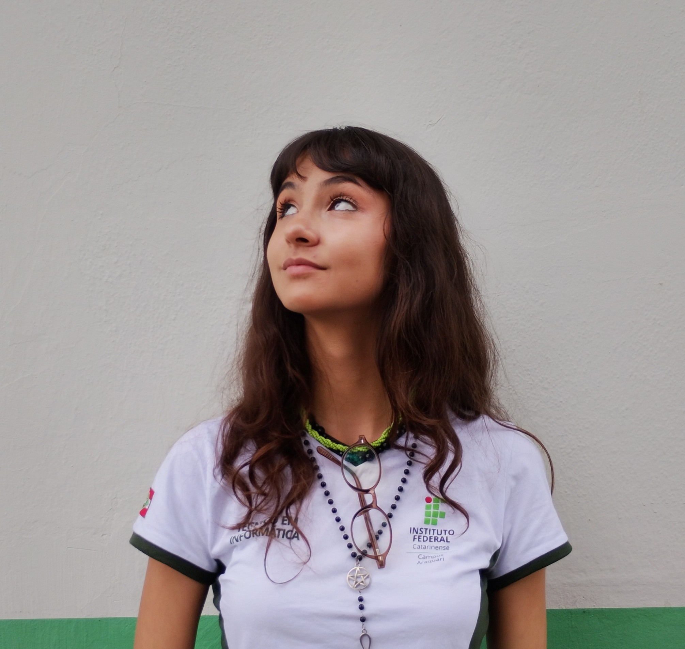
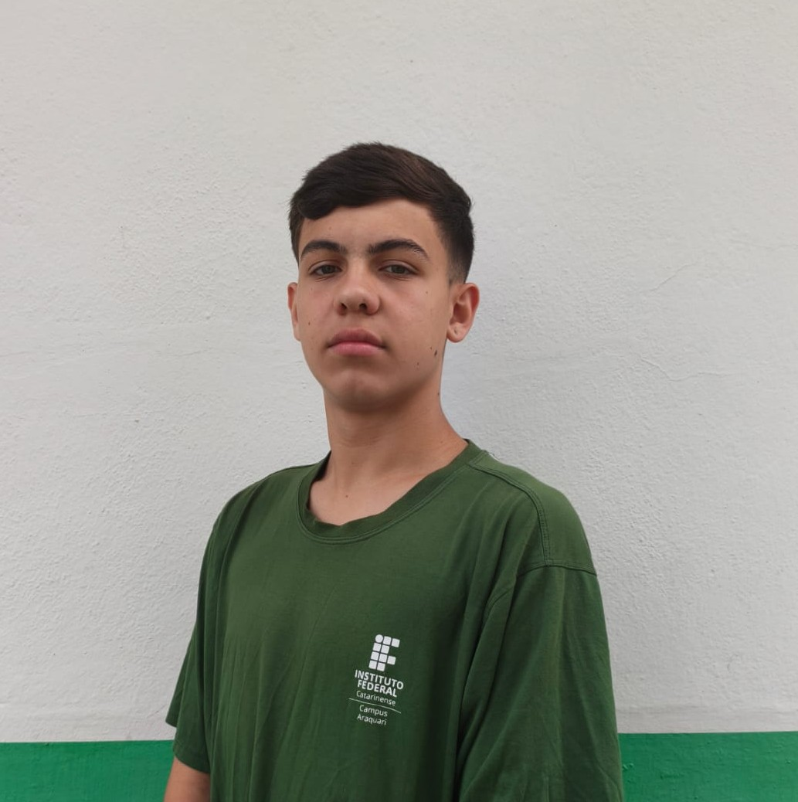
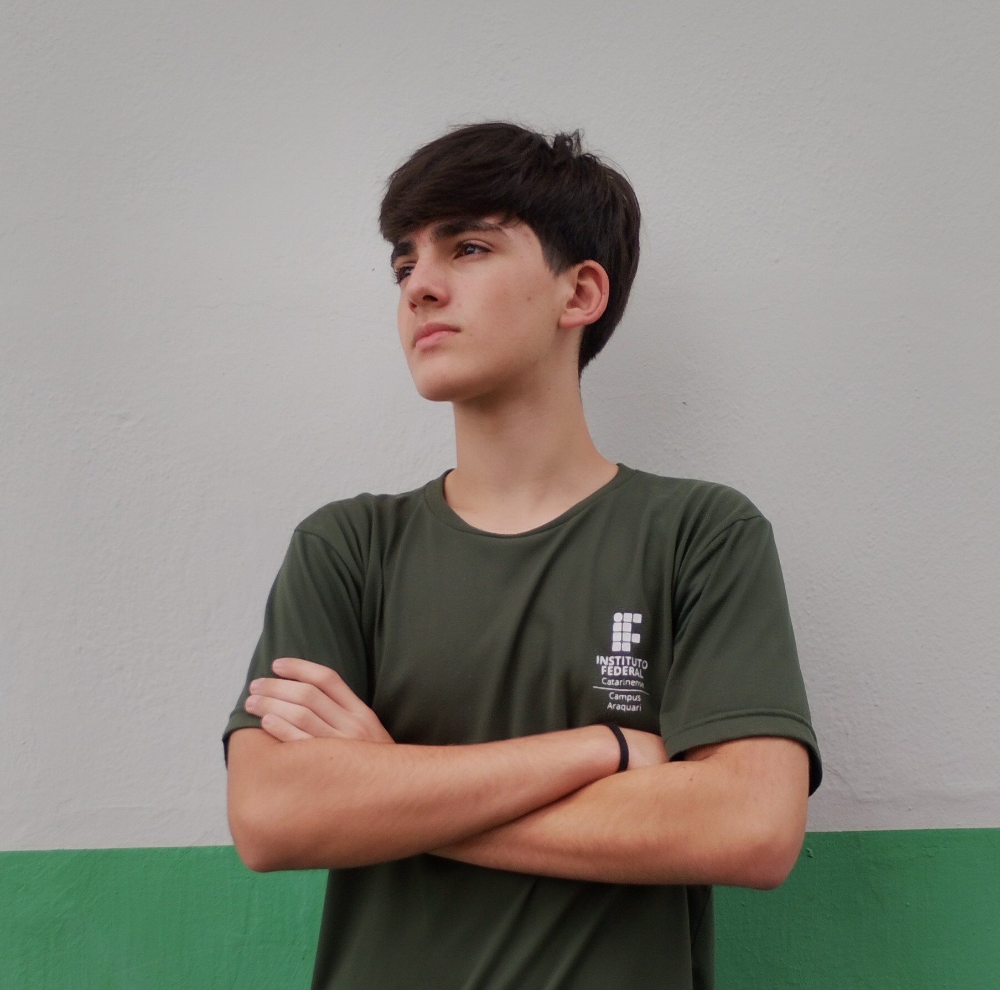
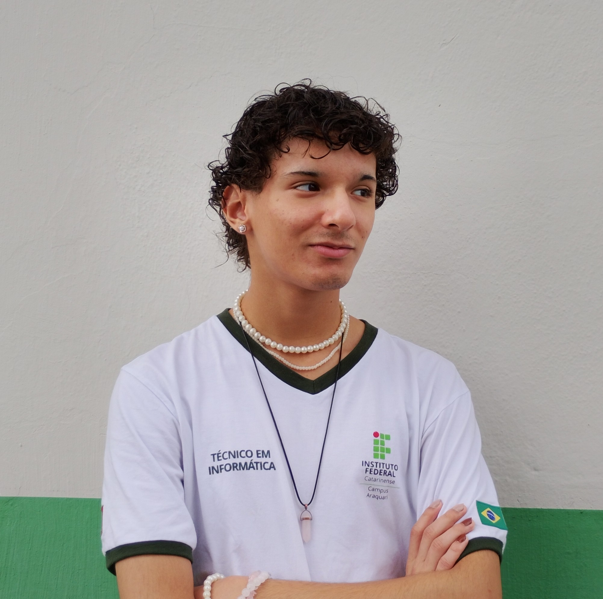

O “Alimentando o Mundo” surgiu através da ideia de um grupo de estudantes da 1info2 através das orientações do professor Mehran sobre a Produção de alimentos para grandes populações, o que nos fez pensar nas dificuldades enfrentadas nesse setor para aqueles que realmente buscam formas seguras e sustentáveis de contribuir para a população através da agricultura e tecnologia, sem afetar suas produções e lucros.
Team
-

Maria Eduarda do Nascimento Fraga
Diretora Geral
Trabalhou como Diretora geral. Produziu as Páginas "Inicial" e a "Pesquisa de Satisfação", sendo responsável pelas atas juntamente com o Guilherme e organizou o GitHub.
-

Raquel Durães
Programadora
Trabalhou na parte de programação do site e colaboradora nas redes sociais. Produziu a página "Sustentabilidade" e auxiliou no desing do site além da colaboração nas redes sociais.
-
Isabella Machado
Programadora
Trabalhou como uma das programadoras do site. Produziu as Páginas "Sobre Nós" e "Pecuária" que foi retirada depois, auxiliou o desing no Figma e suporte no GitHub.
-

Alice Gouvea Soares
Responsável Pesquisas
Trabalhou principalmente na parte das pesquisas para o site. Auxiliou na programação da página "Desafios da Produção".
-

Guilherme Andrade Queiroz
Programador
Trabalhou como um dos programadores do site. Produziu a página "Quiz" e colaborou com as atas, também participando como secretário.
-

Mehiel Krahl Amorim
Programador e Responsável Figma
Trabalhou com o desing inicial do site no Figma e atuou como programador do site. Produziu a página "Agricultura em Larga Escala", colaborou com as outras páginas e com o GitHub.
-

Julio Cesar Koch
Responsável Redes Sociais
Trabalhou principalmente com as redes sociais, e como programador do site. Produziu a página "Tecnologia" e auxiliou no desing além de ter cuidado oficialmente das redes sociais.